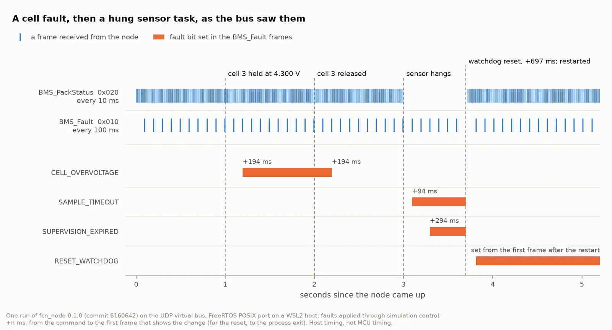

Embedded · Simulation
FreeRTOS battery-module CAN node, simulated
A FreeRTOS telemetry node for one module of a battery pack, simulated on a laptop: the firmware runs on the FreeRTOS POSIX port with a modeled CAN controller, sensor front end and watchdog.

It publishes end-to-end protected telemetry, records faults as UDS-style diagnostic trouble codes and resets itself when a task hangs. Phases 0 to 3 of 8 are finished; the A/B bootloader, UDS firmware download and a Cortex-M3 build in QEMU are still to come.
The problem
A battery-module node reports cell voltages, temperatures and current on CAN, flags faults and recovers when its own firmware hangs. I wanted it built and tested on a laptop and in CI, with no board on the bench.
So the node runs as a Linux process on the FreeRTOS POSIX port. That port's tick runs slow against the wall clock, and a plain socket delivers every frame instantly and intact, which hides what a real bus does.
What I built
A host platform layer removes three errors of the port without touching the V11.3.3 kernel. It locks the tick to CLOCK_MONOTONIC at link time, delivers simulated interrupts through lock-free rings and measures each task's real stack peak.
Five statically allocated tasks read a deterministic sensor model, filter the readings in fixed point and publish eight cyclic messages defined in a DBC file. Five of them carry AUTOSAR E2E (end-to-end) Profile 11 protection: a CRC and a rolling counter.
Faults come from outside, as on a bench: a control channel shorts the bus, opens a sense wire or hangs the sensor read.
- CAN controller model with exact stuffed frame lengths, arbitration and Bosch fault confinement, over SocketCAN or a UDP virtual bus.
- Sixteen faults mapped to 24-bit trouble codes with the ISO 14229-1 (UDS) status byte.
- AUTOSAR-style alive supervision gating an STM32 independent watchdog (IWDG) model, with the reset cause kept in a CRC-checked retained RAM cell.
- C11 under -Werror, with cppcheck's MISRA C:2012 addon and clang-tidy in CI.
Results
As of Nov 21, 2026, 978 Python tests pass in CI, plus 55 C test runs under AddressSanitizer and UBSan. Line coverage of the portable library is 99.8%. The E2E code matches an independent Python implementation on 20,193 requests.
On the laptop the locked tick measured 1000.1 µs, against 1128.8 µs for the stock port. When I hang the sensor read, the bus shows SAMPLE_TIMEOUT after about 100 ms and SUPERVISION_EXPIRED after about 300 ms. About 700 ms after the hang the watchdog resets the node.
A response-time analysis finds every task schedulable with the design budgets. The CAN transmit task is tightest: 973 µs worst case against a 1000 µs deadline. Moving the trouble-code work into the processing task would raise that to 1209 µs, so the lowest-priority task owns the codes.
The bug log holds nine defects: seven found in reviews of phases 0 and 1, two by tests as the code was written. CI re-creates each one from a patch and checks that its tests fail.
Limits and next steps
None of this has run on a microcontroller. Every timing figure belongs to a laptop, and the execution-time budgets are design figures until phase 6 measures them. The bus model works on whole frames, with no bit timing or CAN FD.
Trouble codes live in RAM for now, so a reset loses them. The MISRA check is cppcheck's addon with documented deviations, which falls short of a compliance claim.
Phase 4 adds a simulated NOR flash and an A/B bootloader. After that come ISO-TP and UDS firmware download, measurements, and a Cortex-M3 build in QEMU.
Ask a question about this project
An AI assistant answers from this site's text. It can be wrong; this page is the source.